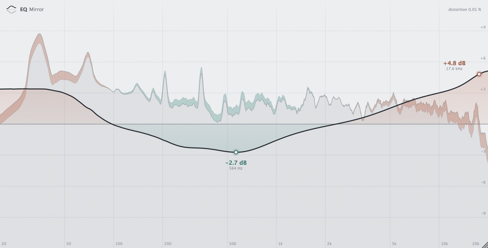
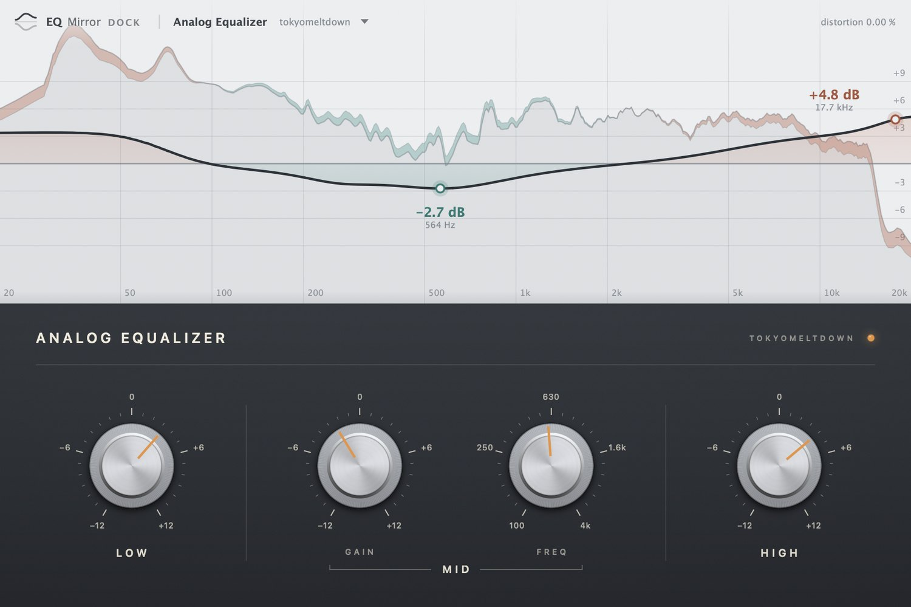

Analog, made visible.アナログを、
可視化する。
The curve your EQ is really applying, measured from the sound. Put EQ Mirror on either side of your EQ, or your EQ inside EQ Mirror Dock. EQ が実際にかけているカーブを、音から測って描きます。EQ を EQ Mirror で前後から挟むか、EQ Mirror Dock の中に入れるか。
macOS 12+ · Apple silicon & Intel · Signed & notarized署名・公証済み


Screenshots. Analog Equalizer is our own demo EQ; use your own AU or VST3 EQs.実際の画面です。Analog Equalizer は当方のデモ用 EQ です。お手持ちの AU / VST3 の EQ で使えます。
From the sound, not the dial.目盛りではなく、音から。
Analog-style EQs seldom draw a curve. EQ Mirror measures the shape the sound actually went through.アナログ系の EQ は、たいていカーブを描きません。EQ Mirror は、音が実際に通った形を測ります。
Your EQ, inside.EQ ごと、1つに。
Load an AU or VST3 EQ into EQ Mirror Dock. The curve follows every knob, even with the transport stopped.AU / VST3 の EQ を EQ Mirror Dock に読み込めば、再生を止めていても、ツマミを回すたびにカーブがついてきます。
Left and right. Mid and side.左右も、M/S も。
When the two sides are treated differently, the curve opens into a band and says which.左右や M/S で処理が違うと、カーブが帯に開いて、どちらかを示します。
- One-time買い切り
- 5 Macs5台まで
- No subscriptionサブスクなし
- Free updates無料アップデート
Every feature, free for 14 days. No account.
When the trial ends, the curve is no longer shown and the sound keeps playing.14日間、すべての機能を試せます。アカウントは要りません。
トライアルが終了するとカーブは表示されなくなりますが、音はそのまま流れます。
Both plug-ins, in any DAW that hosts these. The Dock loads AU and VST3 EQs.どちらのプラグインも。Dock に入れられる EQ は AU / VST3 です。
Apple silicon & Intel. Signed and notarized.Apple silicon・Intel。署名・公証済み。
The pair never changes the audio. In the Dock you hear your EQ alone, and the Dock tells your DAW its latency.前後に挿す EQ Mirror は音を変えません。Dock で聞こえるのは中の EQ の音だけで、遅れも DAW に伝えます。
Audio is never stored or sent. The only connection is licence activation.音は保存も送信もしません。通信はライセンス認証だけです。